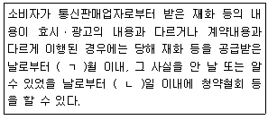
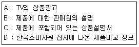
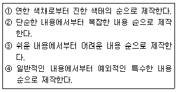
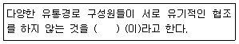
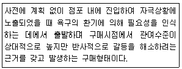
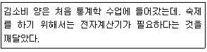

소비자전문상담사-2급 (2013-03-10 기출문제)
1과목: 소비자상담 및 피해구제
1. 구매의사결정단계별로 소비자상담을 구분할 때 현재까지 한국소비자원과 소비자단체에서의 소비자상담 중 비중이 가장 큰 것은?
- 구매 전 상담
- 구매 시 상담
- 비구매 상담
- 구매 후 상담
(정답률: 알수없음)

2. 소비자의 특성별 상담대응으로 가장 적합하지 않은 것은?
- 우유부단한 소비자에게는 선택대안을 먼저 제시한다.
- 반말형 소비자에게는 민첩하고 빈틈없이 응대한다.
- 신경질형 소비자에게는 친절하되 타이르듯 응대한다.
- 상품지식형 소비자에게는 상품지식의 가치를 존중한다.
(정답률: 알수없음)
3. 방문판매로 인한 소비자피해유형에 따른 피해구제방법이 옳은 것은?
- 청약철회시 사업자는 물품을 회수할 때 소요되는 비용을 소비자에게 청구할 수 없다.
- 소비자의 청약철회권 행사를 방해하기 위해 사업자가 고의로 상품을 훼손한 경우 소비자도 일정부분 책임을 져야 한다.
- 계약서를 교부받지 못하고 상품을 인도받게 되는 경우 제조처의 명칭만 있다면 철회요청을 할 수 없다.
- 노상계약의 경우 방문판매와 동일한 법적보호를 받을 수 없기 때문에 주의를 요한다.
(정답률: 알수없음)
4. 전화 상담과 비교하여 인터넷 상담이 가지는 장점으로 옳은 것은?
- 인터넷 상담에서는 데이터베이스화된 프로그램을 통해 24시간 상담서비스가 가능하다.
- 인터넷 상담에서는 문자를 사용하게 되므로 의사소통이 원활하다.
- 인터넷 상담에서는 우선 소비자와 신뢰관계를 형성해야함이 바람직하다.
- 인터넷 상담에서는 상담요청자의 익명성이 보장되므로 무책임하게 행동해도 무방하다.
(정답률: 알수없음)
5. 소비자분쟁해결기준의 법적 근거는?
- 소비자기본법
- 독점규제 및 공정거래에 관한 법률
- 소비자생활협동조합법
- 방문판매 등에 관한 법률
(정답률: 알수없음)
6. 민간 소비자단체의 주요 활동이 아닌 것은?
- 소비자고발센터와 같은 상담 및 피해구제 업무
- 출판물 발간 및 홍보활동
- 소비자의식 조사 및 소비생활환경 실태조사
- 소비자분쟁조정위원회 설치 및 조정 활동
(정답률: 알수없음)
7. 소비자상담을 위해 고객과 유지해야 할 거리는 다음 중 어느 거리영역에 속하는가?(오류 신고가 접수된 문제입니다. 반드시 정답과 해설을 확인하시기 바랍니다.)
- 친밀한 거리
- 개인적 거리
- 사회적 거리
- 대중적 거리
(정답률: 알수없음)
8. 시간과 돈을 절약하고자 하는 단호한 형의 소비자에게 적합한 소비자 상담전략은?
- 개방형 질문을 통해 많은 양의 정보를 제공한다.
- 시간절약을 위해 고객이 말할 기회를 제한한다.
- 변명하지 않고 간결한 설명위주로 사실적인 해결방법을 제시한다.
- 소비자의 질문에 대해 직접적이고 사실적인 대답을 유보한다.
(정답률: 알수없음)
9. 컴퓨터전화통합(Computer Telephony Integration : CTI)에 대한 설명으로 틀린 것은?
- 인바운드 서비스와 아웃바운드 서비스를 모두 통합 관리하는 것이 일반적이다.
- 전화요청 서비스는 고객이 인터넷상에서 상담서비스 신청 시 연락할 전화번호를 남기면 상담원이 발신하여 상담이 처리되는 것이다.
- 음성통화 서비스는 홈페이지의 상담원 요청버튼을 클릭하여 상담원과 직접 통화할 수 있는 장치이다.
- 웹 콜백 서비스는 상담원 연결이 안될 때 고객이 메시지를 남기면 인바운드 기능에 의해 자동발신되어 상담처리되는 기능을 말한다.
(정답률: 알수없음)
10. 소비자분쟁해결기준에 대한 설명으로 틀린 것은?
- 소비자와 사업자간에 일어날 수 있는 피해보상에 관한 분쟁을 원활하게 해결하기 위해 1985년 제정되었다.
- 소비자분쟁히경기준은 일반적으로 소비자분쟁해결기준과 품목별 소비자분쟁해결기준으로 구분한다.
- 소비자분쟁해결기준과 다른 법령의 보상기준이 일치하지 않으면, 소비자분쟁해결기준을 우선적으로 적용한다.
- 소비자분쟁해결기준의 적용을 받는 대상 사업자는 물품의 제조업자ㆍ판매업자ㆍ수입업자는 물론 용역의 제공자까지 포함한다.
(정답률: 알수없음)
11. 소비자를 설득할 때 나타나는 저항을 감소시키는 방법은?
- 소비자가 관심을 다른 곳으로 돌리도록 무차별적으로 회피를 시도한다.
- 소비자가 갖고 있는 부정적 사전지식을 바르게 알려주려는 의도를 설명한다.
- 소비자가 상담사에게 논리적으로 반박하지 못하도록 상담내용을 적절히 막는다.
- 경쟁제품의 문제점을 미리 알려 경쟁기업의 판매압력에 대항하는 면역성을 길러 준다.
(정답률: 알수없음)
12. 구매 시 소비자상담사의 역할을 소비자측면과 기억측면의 역할로 구분할 때 다음 중 소비자측면에서의 역할은?
- 소비자 의사결정 지원
- 이윤 창출 기여
- 기존 소비자 유지
- 새로운 소비자 확보
(정답률: 알수없음)
13. 행정기관에서 제공하는 소비자 상담의 내용으로 가장 적합한 것은?
- 소비자 문제의 피해구제
- 제품에 대한 에프터서비스
- 특정 기업제품에 대한 사전 정보 제공
- 제품에 대한 고객만족도 조사
(정답률: 알수없음)
14. 소비자상담 처리순서를 바르게 나열한 것은?
- 상담내용 접수→해결가능한 소비자문제인지 확인 →상담사건 분류→상담진행과정 기록→실제제품 확인 또는 검사의뢰
- 상담내용 접수→상담사건 분류→해결가능한 소비자문제인지 확인→상담진행과정 기록→실제제품 확인 또는 검사의뢰
- 해결가능한 소비자문제인지 확인→상담내용 접수→상담사건 분류→상담진행과정 기록→실제제품 확인 또는 검사의뢰
- 해결가능한 소비자문제인지 확인→상담내용 접수→상담사건 분류→실제제품 확인 또는 검사의뢰→상담진행과정 기록
(정답률: 알수없음)
15. 미래 기업 소비자상담의 활성화방안으로 적당하지 않은 것은?
- 상당 부서의 업무 향상을 위한 상담사들을 대상으로 하는 교육 프로그램을 개발하여 교육을 실시한다.
- 적절한 소비자상담 전문가를 양성한다.
- 구매 후 문제에만 초점을 두어 고객상담실이 고객만족경영의 중심부서가 되도록 한다.
- 고객상담실이 기업의 핵심부서가 되도록 조직, 개편하여 위상을 높인다.
(정답률: 알수없음)
16. 다음 중 소비자단체의 소비자상담활동에 관한 설명으로 가장 적합한 것은?
- 소비자상담활동의 영향력이 확대되어 전체가 전국적인 규모로 이루어지고 있다.
- 소비자의 대리인이 되어 문제해결에 적극적으로 임한다는 점에서 다른 상담기관과 차별화된다.
- 소비자단체의 활동내용이 단체별로 특화되어 있다.
- 구매 후 피해구제에 업무가 집중되어 있던 상황에서 벗어나 구매 전 정보제공 등 소비생활전반에 대한 정보제공활동이 가장 큰 비중을 차지한다.
(정답률: 알수없음)
17. 신혼살림을 장만하기 위해 세트로 구입한 옷장 및 화장대 세트의 색상과 크기가 동일하지 않은 것을 발견한 경우 이에 대한 피해구제방법으로 적절하지 않은 것은?
- 품질보증기간인 1년 이내에 무상수리 및 보수가 가능하다.
- 동일한 세트를 구하지 못할 경우 구입액 전부를 환불받을 수 있다.
- 구입당시에 몰랐으나 며칠 뒤에 색상과 크기가 동일하지 않음을 발견하여도 1개월 이내에 교환받을 수 있다.
- 신혼가구이기 때문에 추가적으로 정신적 피해보상을 받을 수 있다.
(정답률: 알수없음)
18. 다음 중 소비자가 신용카드사에 할부대금 지급 취소를 요철할 수 있는 권리인 항변권을 사용할 수 있는 사유가 아닌 것은?
- 할부계약이 무효, 취소 또는 해제된 경우
- 목적물이 약속된 날짜까지 인도되지 않는 경우
- 매도인이 하자담보책임을 이행하지 않는 경우
- 할부거래 혹은 일시불 거래로 한 모든 경우
(정답률: 알수없음)
19. 소비자분쟁해결기준의 성격으로 옳지 않은 것은?
- 법원의 판결과 같은 의미를 갖는다.
- 이 기준을 참고해 사업자는 기준이상 보상해주어야 한다.
- 소비자와 사업자간의 분쟁을 원활하게 해결하기 위한 최저수준이다.
- 피해구제기관은 기준이상의 합의권고 또는 조정을 해주어야 한다.
(정답률: 알수없음)
20. 소비자상담을 구매의사결정 단계별로 나눌 경우 구매 전 상담의 역할이 아닌 것은?
- 소비자 불만처리의 정보제공
- 소비자 정보제공의 역할
- 구매상담 및 조언의 역할
- 소비생활 상담 및 교육의 역할
(정답률: 40%)
21. 기업 소비자상담의 업무내용으로 가장 적합한 것은?
- 기업의 소비자상담사는 소비자분쟁해결기준을 숙지하여 그 이상의 피해보상은 할 필요가 없다.
- 기업 소비자상담사는 고객에게 상품정보를 제공하면 된다.
- 구매 후 고객들에 대한 지속적인 관리를 통해 계속적인 관계를 유지한다.
- 고객에게 먼저 사과하는 것은 기업 이미지상 바람직한 것이 아니다.
(정답률: 알수없음)
22. 상담자의 바람직한 태도와 행동특징은?
- 상담자가 직접 경험하지 않아도 다른 사람의 감정을 비슷한 수준으로 이해하기
- 내담자에게 희망을 주기 위해 사실을 회피하는 기술
- 상담자의 가치관과 신념을 관철시키려는 의지
- 상담자가 반대 의견을 말할 때 권위적인 자세 표현
(정답률: 알수없음)
23. 다음의 품목별 소비자분쟁해결기준에 대한 설명 중 일반적 기준에 해당하지 않는 것은?
- 품질보증기간
- 수리비의 부담기준
- 교환기준
- 할인기준
(정답률: 알수없음)
24. 기업의 소비자상담실이 소비자단체와 다른 점은?
- 소비자 불만처리 및 피해구제를 한다.
- 소비자의 다양한 욕구를 파악한다.
- 소비자에게 정고제공을 한다.
- 소비자상담을 마케팅의 일환 또는 이윤추구를 목적으로 한다.
(정답률: 알수없음)
25. 다음은 상담시 소비자들의 욕구를 파악하기 위한 질문들이다. 이 중 성격이 다른 하나는?
- 00씨는 자동차의 어떤 성능을 원하십니까?
- 00씨. 제가 들은 것이 확실하다면 휴대폰을 켜실 때 문제가 생기는 거죠?
- 00씨. 전에 저희 회사 서비스를 이용하신 적이 있다고 하셨는데 맞습니까?
- 00씨가 도르신 이 셔츠는 지금 자켓의 소재와 동일합니다. 이것을 싸드릴까요?
(정답률: 알수없음)
2과목: 소비자 관련법
26. 약관의 규제에 관한 법률의 일반원칙에 따라 ‘공정성을 잃은 것’으로 추정되는 내용이 아닌 것은?
- 고객에게 부당하게 불리한 조항
- 고객이 계약의 거래형태 등 관련된 모든 사정에 비추어 예상하기 어려운 조항
- 고객에 주어진 기한의 이익을 상당한 이유 없이 박탈하는 조항
- 계약의 목적을 달성할 수 없을 정도로 계약에 따르는 본질적 권리를 제한하는 조항
(정답률: 알수없음)
27. 소비자기본법에 명시되어 있는 소비자의 기본적 권리가 아닌 것은?
- 물품 등을 선택함에 있어서 필요한 지식 및 정보를 제공받을 권리
- 합리적인 소비생활을 위하여 관계 법령, 조례의 제정ㆍ개정ㆍ폐지할 권리
- 물품 등의 사용으로 인하여 입은 피해에 대하여 신속ㆍ공정한 절차에 따라 적절한 보상을 받을 권리
- 소비자 스스로의 권익을 증진하기 위하여 단체를 조직하고 이를 통하여 활동할 수 있는 권리
(정답률: 알수없음)
28. 방문판매 등에 관한 법률에서 규정하고 있는 판매방법이 아닌 것은?
- 통신판매
- 다단계판매
- 방문판매
- 전화권유판매
(정답률: 알수없음)
29. 소비자기본법 상 사업자의 책무에 속하지 않는 것은?
- 사업자는 물품 등으로 인하여 소비자에게 생명ㆍ신체 또는 재산에 대한 위해가 발생하지 아니하도록 필요한 조치를 강구하여야 한다.
- 사업자는 소비자의 기본적 권리가 실현되도록 하기 위하여 건전하고 자주적인 조직활동을 지원ㆍ육성하여야 한다.
- 사업자는 소비자의 개인정보가 분실ㆍ도난ㆍ누출ㆍ변조 또는 훼손되지 아니하도록 그 개인정보를 성질하게 취급하여야 한다.
- 사업자는 물품 등의 하자로 인한 소비자의 불만이나 피해를 해결하거나 보상하여야 하며, 채무불이행 등으로 인한 소비자의 손해를 배상하여야 한다.
(정답률: 알수없음)
30. 민법의 원칙상 특정물인도이외의 채무변제의 장소는?
- 채권자의 현주소
- 채무자의 현주소
- 채권성립당시의 물건소재지
- 이행기의 물건소재지
(정답률: 알수없음)
31. 표시ㆍ광고의 공정화에 관한 법률 제5조에서 표시ㆍ광고 내용의 실증에 대한 설명으로 틀린 것은?
- 사업자 등은 자기가 행한 표시ㆍ광고 중 사실과 관련한 사항에 대하여는 이를 실증할 수 있어야 한다.
- 공정거래위원회는 사업자 등이 법 규정에 위반할 우려가 있어 소정의 실증이 필요하다고 인정되는 경우에는 그 내용을 구체적으로 명시하여 당해 사업자 등에게 관련 자료의 제출을 요청할 수 있다.
- 공정거래위원회로부터 실증자료의 제출을 요청받은 날부터 7일 이내에 그 실증 자료를 제출하여야 한다.
- 공정거래위원회는 상품 등에 관하여 소비자가 잘못 아는 것을 방지하거나 공정한 거래질서를 유지하기 위하여 필요하다고 인정되는 경우에는 소정의 규정에 의하여 사업자 등이 제출한 실증자료를 갖추어 두고 일반이 열람할 수 있게 하거나 기타 적절한 방법으로 이를 공개할 수 있다.(다만, 사업자 등이 영업상 비밀에 해당하여 영업활동을 침해할 우려가 있는 경우에는 제외한다.)
(정답률: 알수없음)
32. 소비자기본법상 소비자단체소송의 허가요건이 아닌 것은?
- 다수 소비자의권익보호 및 피해예방을 위한 공익상의 필요가 있을 것
- 소송허가신청 결과에 대해 1회 이상 항고하였을 것
- 소제기단체가 사업자에게 소비자권익 침해행위를 금지ㆍ중지할 것을 서면으로 요청한 후 14일이 경과하였을 것
- 소송허가신청서의 기재사항에 흠결이 없을 것
(정답률: 알수없음)
33. 제조물책임법상 제조물책임에 대한 설명 중 맞는 것은?
- 결함의 부존재에 관한 행정해석은 법원의 판단을 구속하지 않는다.
- 제조물책임에 관한 면책특약은 유효하다.
- 제조물을 제조한 날부터 10년이 지나면 책임을 지지 않는다.
- 손해배상의 청구권은 손해배상책임을 지는 자를 안날부터 1년간 이를 행사하지 아니하면 시효로 인하여 소멸한다.
(정답률: 20%)
34. 전자상거래 등에서의 소비자보호에 관한 법률상 전자상거래 또는 통신판매를 행함에 있어서 건전한 거래질서 확립 및 소비자의 보호를 위하여 사업자의 자율적인 주수를 유도하기 위한 “소비자보호지침”을 제정할 수 있는 기관은?
- 지식경제부
- 공정거래위원회
- 한국소비자원
- 금융감독원
(정답률: 알수없음)
35. 방문판매 등에 관한 법률상 방문판매자등의 금지행위에 해당하지 않는 것은?
- 재화등의 판매에 관한 계약의 체결을 강요하는 행위
- 방문판매원등에게 다른 방문판매원등을 모집할 의무를 지게 하는 행위
- 계약 해지를 방해할 목적으로 주소 등을 변경하는 행위
- 재화등의 거래에 따른 대금을 정산하기 위하여 필요한 경우 본인의 허락을 받지 않고 소비자에 관한 정보를 제3자에게 제공하는 행위
(정답률: 알수없음)
36. 민법상 법률행위의 무효와 취소에 대한 설명 중 틀린 것은?
- 무효인 법률행위는 추인하여도 그 효력이 생기지 않는 것이 원칙이다.
- 무효인 법률행위에 대하여 당사자가 무효임을 알고 추인한 때에는 소급하여 효력이 생긴다.
- 미성년자가 행한 취소할 수 있는 법률행위는 미성년자가 단독으로 취소할 수 있다.
- 취소된 법률행위는 처음부터 무효인 것으로 본다.
(정답률: 알수없음)
37. 방문판매 등에 관한 법률의 적용을 받는 대상은?
- 백화점에서 현금으로 구입한 선물용 지갑
- 광고를 보고 전화를 이용하여 구입한 건강식품
- 인터넷을 통해 구입한 대학전공서적
- 다단계판매업자로부터 판매목적으로 구매한 판매원의 자석요
(정답률: 알수없음)
38. 제조물책임법의 내용에 대한 설명으로 틀린 것은?
- 제조업자는 제조물의 제조ㆍ가공 또는 수입을 업으로 하는 자를 말한다.
- 제조물에 성명ㆍ상호ㆍ상표 기타 식별 가능한 기호 등을 사용하여 자신을 제조물의 제조ㆍ가공 또는 수입을 업으로 하는 자로 표시한 자도 제조물책임을 부담한다.
- 제조물의 제조업자를 알 수 없는 경우 영리목적으로 판매ㆍ대여 등의 방법에 의하여 공급한 자는 현행법상 제조물책임의 주체가 되지는 않는다.
- 결함이 있는 부품이나 원재료의 제조자는 이 부품이나 원재료를 사용하여 제조된 완성품의 결함에 대하여 부품업자나 재료공급자도 제조물책임을 부담한다.
(정답률: 알수없음)
39. 방문판매 등에 관한 법률 제17조 청약철회에 관한 설명 중 빈칸에 알맞은 숫자를 순서대로 배열한 것은?

- (ㄱ) -1, (ㄴ) -10
- (ㄱ) -2, (ㄴ) -20
- (ㄱ) -3, (ㄴ) -30
- (ㄱ) -4, (ㄴ) -40
(정답률: 알수없음)
40. 표시ㆍ광고의 공정화에 관한 법률상 사업자단체가 당해 사업자단체에 가입된 사업자에 대하여 표시ㆍ광고를 제한하는 행위를 할 수 있는 경우가 아닌 것은?
- 법령에 따르는 경우
- 사업자단체의 계속적인 존속을 위한 경우
- 공정거래위원회가 공정한 거래질서를 유지하기 위하여 필요하다고 인정되는 경우
- 공정거래위원회가 소비자의 이익을 보호하기 위하여 필요하다고 인정되는 경우
(정답률: 알수없음)
41. 할부거래에 관한 법률이 적용되는 재화의 거래에 해당하는 것은?
- 약사법에 따른 의약품
- 보험업법에 따른 보험
- 부동산
- 한국표준산업분류표상의 제조업에 의하여 생산된 농산물
(정답률: 알수없음)
42. 약관의 규제에 관한 법률상 약관의 작성 및 설명의무 등을 적용받는 업종에 해당하는 것은?
- 여행업
- 여객운송법
- 공중전화 서비스 제공 통신업
- 우편업
(정답률: 알수없음)
43. 할부거래에 관한 법률에 따라 할부계약에 관한 청약철회에 관한 설명으로 틀린 것은?
- 소비자는 할부거래업자가 청약의 철회를 방해한 경우에는 그 방해 행위가 종료한 날부터 7일 이내에 할부계약에 관한 청약을 철회할 수 있다.
- 원칙적으로 설치된 보일러는 청약의 철회를 할 수 없다.
- 소비자가 청약을 철회할 경우 계약서를 받은 날부터 7일 이내에 할부거래업자에게 청약을 철회하는 의사표시가 적힌 서면을 발송하여야 한다.
- 할부가격이 25만원인 할부계약은 청약을 철회할 수 없다.
(정답률: 알수없음)
44. 할부거래에 관한 법률 제16조에 따른 소비자 항변권에 관한 설명으로 틀린 것은?
- 소비자는 할부계약이 무효인 경우 할부거래업자에 그 할부금의 지급을 거절할 수 있다.
- 소비자가 항변권의 행사를 서면으로 하는 경우 그 효력은 할부거래업작가 서면을 수령한 날에 발생한다.
- 할부거래업자는 소비자의 항변을 서면으로 수령한 경우 지체 없이 그 항변권의 행사 사유에 해당하는지를 확인하여야 한다.
- 할부거래업자는 소비자의 항변권 행사에 관하여 통지를 하지 아니한 경우에는 소비자의 할부금 지급 거절의사를 수용한 것으로 본다.
(정답률: 알수없음)
45. 할부거래에 관한 법률상 할부수수료의 실제연간요율의 최고한도는?
- 연 100분의 10
- 연 100분의 20
- 연 100분의 30
- 연 100분의 40
(정답률: 알수없음)
46. 청약에 대하여 상대방이 조건을 붙여서 승낙하였을 때 그로 인한 법률효과로 가장 적합한 것은?
- 그 청약을 거절한 동시에 새로 청약한 것으로 본다.
- 승낙은 아무런 효과를 발생시키지 못한다.
- 조건 없이 원래의 청약대로 승낙한 것으로 간주된다.
- 원래의 청약을 승낙하고 또 다른 청약을 한 것으로 본다.
(정답률: 알수없음)
47. 표시ㆍ광고의 공정화에 관한 법률 제3조에 따른 부당한 표시ㆍ광고의 행위가 아닌 것은?
- 사실을 지나치게 부풀리는 광고
- 사실을 축소하는 광고
- 다른 사업자의 상품과 자신의 상품을 비교하는 광고
- 다른 사업자의 상품의 불리한 사실만을 알리는 광고
(정답률: 알수없음)
48. 전자상거래 등에서의 소비자보호법에 관한 법률상 용어의 정의에 관한 설명으로 틀린 것은?
- “통신판매”에는 방문판매 등에 관한 법률상의 전화권유판매도 포함된다.
- “전자상거래”란 전자거래의 방법으로 상행위를 하는 것읋 의미한다.
- “소비자”란 사업자가 제공하는 재화등을 소비생활을 위하여 사용하는 자와 사실상 소비자와 동일한 지위 및 거래조건으로 거래하는 자 등을 말한다.
- “사업자”란 물품을 제조ㆍ수입ㆍ판매하거나 용역을 제공하는 자를 말한다.
(정답률: 알수없음)
49. 소비자기본법상 소비자단체에 관한 설명으로 틀린 것은?
- 물품 등의 거래조건이나 거래방법에 관한 조사ㆍ분석을 하고 그 결과를 공표할 수 있다.
- 소비자의 불만 및 피해를 처리하기 위한 상담ㆍ정보 제공 및 당사자 사이의 합의의 권고를 할 수 있다.
- 국가 또는 지방자치단체는 모든 소비자단체에 대하여 그 업무수행에 필요한 최소한의 보조금을 지급할 의무가 있다.
- 소비자단체는 업무상 알게 된 정보를 소비자의 권익을 증진하기 위한 목적 이외의 용도에 사용할 수 없다.
(정답률: 알수없음)
50. 전자상거래 등에서의 소비자보호에 관한 법률상 전자상거래를 행하는 사업자 또는 통신판매업자의 금지행위가 아닌 것은?
- 허위ㆍ과장 또는 기만적인 방법으로 소비자를 유인 또는 거래하는 행위
- 청약철회 등을 방해할 목적으로 주소ㆍ전화번호ㆍ인터넷 도메인 이름 등을 변경 또는 폐지하는 행위
- 분쟁이나 불만처리에 필요한 인력 또는 설비의 부족을 상당기간 방치하여 소비자에게 피해를 주는 행위
- 소비자의 청약에 따라 대금청구서를 먼저 보낸 후 물품을 공급한 행위
(정답률: 알수없음)
3과목: 소비자 교육 및 정보제공
51. 소비자교육 프로그램을 효과적으로 체계화하기 위한 방안과 가장 거리가 먼 것은?
- 소비자교육 프로그램 내용의 편중을 지양하고 다양화를 시도해야 한다.
- 소비자의 입장에서 생활가치를 수호하기 위한 소비자교육 프로그램이 개발되어야 한다.
- 소비자교육을 생활화하기 위해서는 실생활보다는 이론에 중점을 둔 소비자교육 프로그램을 개발해야 한다.
- 현재의 경제적, 사회적, 문화적 상태와 국가적 수준의 욕구를 충족시키도록 소비자교육 프로그램 내용을 설정해야 한다.
(정답률: 알수없음)
52. 소비자정보제공의 내용을 선택, 재무관리, 구매법, 소비자시민성의 4대 영역으로 구분할 때 소비자권리와 책임, 환경 및 제품안전문제가 속하는 영역은?
- 선택 영역
- 구매법 영역
- 재무관리 영역
- 소비자시민성 영역
(정답률: 알수없음)
53. 소비자교육 프로그램의 평가기준으로 가장 거리가 먼 것은?
- 얼마나 많은 소비자가 참여했는가?
- 내용이 참신하면서도 실용적이었는가?
- 교육내용이 피교육자에게 잘 전달되었는가?
- 프로그램이 피교육자의 수준에 적합했는가?
(정답률: 알수없음)
54. 성인소비자교육의 원리와 가장 거리가 먼 것은?
- 자발적 학습의 원리
- 상호학습의 원리
- 현실성의 원리
- 지시적 학습의 원리
(정답률: 알수없음)
55. 기업의 측면에서 본 소비자정보 관리의 필요성으로 가장 거리가 먼 것은?
- 변화하는 생활환경에 대한 소비자의 적응력을 높여주기 위해서 필요하다.
- 기업환경이 빠른 속도로 변화하므로 이를 예측하고 대비하기 위해서 필요하다.
- 기업 소비자정보는 중요한 기업의 자산으로 평가되므로 필요하다.
- 기업경영의 효율성과 경쟁력을 위한 원동력이 되므로 필요하다.
(정답률: 알수없음)
56. 교사와 학생이 구체적인 교육의 목적을 설정하고 그 목적당성을 위한 계획을 세운 후 실제로 직접 실행해보고 효과를 평가하는 일련의 학습방식은?
- 사례연구
- 문제해결학습
- 구안학습
- 델파이법
(정답률: 알수없음)
57. 소비자 요구분석을 전화를 이용한 조사연구에 의해 핼할 때 얻기 어려운 자료는?
- 의견
- 기호도
- 시설에 대한 지각
- 특정한 행동에 대한 기록
(정답률: 알수없음)
58. 기업에서 소비자와 관련된 기업의 내ㆍ외부 정보를 분석, 통합하여 고객특성에 기초한 마케팅활동을 계획하고 지원하며 평가하는 과정은?
- 대중마케팅
- 세분화마케팅
- CRM
- OLAP
(정답률: 알수없음)
59. 다음의 소비자정보 중 나머지 셋과 그 성격(원천)이 다른 것은?

- A
- B
- C
- D
(정답률: 알수없음)
60. 노인소비자교육을 시행할 때 주의해야 할 사항으로 틀린 것은?
- 충분한 시간을 준다.
- 학습자의 참여를 권장한다.
- 시각매체에 전적으로 의존한다.
- 노인의 일상경험과 관련된 주제를 사용한다.
(정답률: 알수없음)
61. 소비자교육 프로그램의 실행방법을 선정할 때 고려해야 할 원리는?
- 각 방법들의 시간적, 경제적 효과를 고려해야 한다.
- 지역, 시대, 사회문화적 현실을 배제하는 보편적인 방법이어야 한다.
- 다양한 방법보다는 한 가지 방법을 선택하는 것이 일관성이 있어서 바람직하다.
- 가치관과 태도보다는 활동에 중점을 두어야 한다.
(정답률: 알수없음)
62. 기업경영에 필요한 소비자 정보와 가장 거리가 먼 것은?
- 직접구매 활동과 관련된 정보
- 소비자 성향 분석 자료
- 경쟁력 확보를 위한 정보
- 경영기반 확립을 위한 정보
(정답률: 알수없음)
63. 가탈로그의 효과를 높이기 위한 전략이 아닌 것은?
- 회사 및 제품의 소개를 상세히 하여 설득력 있게 만든다.
- 예상고객에게 제품의 기능, 특징, 가격, 디자인 등을 설명하여 판매촉진에 도움을 주도록 한다.
- 창의적인 내용이 중요하므로, 디자인이나 편집에 신중을 기해야 할 필요는 없다.
- 기업의 방침 및 기업의 제품에 대해 충분히 검토하여 이해를 마친 상태에서 제작되어야 한다.
(정답률: 알수없음)
64. 바니스터와 몬스마(Bannister & Monsma)의 소비자 교육개념 분류에서 대분류에 해당하는 것은?
- 의사결정, 지원관리, 시민참여
- 의사결정과정, 재무계획, 소비자보호
- 자원관리, 재무계획, 시민참여
- 소비자보호, 의사결정, 자원관리
(정답률: 알수없음)
65. 소비자 교육 프로그램 내용 설계시 고려해야 할 사항이 아닌 것은?
- 중요한 경험요소가 어느 정도 계속해서 반복되도록 조절한다.
- 학습내용이 점차적으로 경험의 수준을 높여서 더욱 깊이 있고 다양한 내용으로 나아가야 한다.
- 각 학습경험을 단편적으로 구획하는 것이 아니라 상호보충, 보강되도록 조직해야 한다.
- 학습경험은 추상적인 개념에서 구체적인 개념으로 전체에서 부분으로 나아가야 한다.
(정답률: 알수없음)
66. 「어떠한 속력으로 운전하더라도 자동차는 안전하지 못하다」라는 책을 발간하는 등 미국의 소비자운동을 보다 적극적이고 능동적인 방향으로 전환시킨 사함은?
- 랄프네이더
- 죤에프 케네디
- 체이스와 슐린크
- 캐플로비치
(정답률: 알수없음)
67. 고객에 관한 정보를 활용하는 방법으로 일 년 중 분기별로 구매된 시기와 횟수, 양에 따라 설정된 점수시스템을 의미하는 것은?
- P-F-M 공식
- 확장된 R-F-M 시스템
- 연결 판매
- 고객접점 시스템
(정답률: 알수없음)
68. 소비자정보로서 기능을 다하기 위해 갖추어야 할 특성이 아닌 것은?
- 적시성
- 경제성
- 배타성
- 접근가능성
(정답률: 알수없음)
69. 저소득층에 대한 효율적인 소비자교육방법과 가장 거리가 먼 것은?
- 교육자료는 단순하고 쉬워야 한다.
- 멀티미디어, 만화교재 등을 활용하는 것이 좋다.
- 정보원으로서 문서를 주로 활용하는 것이 좋다.
- 교육자와 피교육자 간의 신뢰감 있는 관계를 형성해야 한다.
(정답률: 알수없음)
70. 소비자능력의 구성요소가 아닌 것은?
- 소비자기능
- 소비자역할
- 소비자태도
- 소비자지식
(정답률: 알수없음)
71. 행정기관이 소비자 정보를 제공하는 형태가 아닌 것은?
- 가격표시정보
- 공정거래위원회의 소비자정보 홈페이지
- 한국소비자원 홈페이지
- 지방자치단체의 소비자정책심의회
(정답률: 알수없음)
72. 소비자정보 제공의 방법 중 컴퓨터와 컴퓨터 통신망을 통하여 사용할 수 있는 디지털화된 자료로써 기간과 공간을 초월한 정보제공이 가능한 형태는?
- 서지자료
- 오디오자료
- 비디오자료
- 전자자료
(정답률: 알수없음)
73. 소비자정보제공을 위한 자료를 설계할 때 고려해야 할 점을 모두 선택한 것은?

- ①, ②
- ②, ④
- ③, ④
- ②, ③, ④
(정답률: 알수없음)
74. 소비자 교육내용의 구성 체계에 관한 설명으로 틀린 것은?
- 소비자 교육내용은 소비생활 그 자체와 관련된 내용만이 중심을 이루어야 한다.
- 소비자 교육의 내용구성은 시대에 따라 달려져야 한다.
- 소비자 교육은 경제적 요소와 더불어 인간의 삶 그 자체를 중심으로 하는 다원적 접근이 요구된다.
- 소비자 교육내용은 소비자를 대상, 주제별로 나누어 구성하는 것이 효과적이다.
(정답률: 알수없음)
75. 소비자요구조사를 위해, 여러 차례에 걸쳐 앙케이트를 반복 실시하여 전문가들의 의견검토 및 분산 상황을 조사하여 현상을 예측하는 자료수집 방법은?
- 면접법
- 델파이법
- 관찰법
- 사례조사법
(정답률: 알수없음)
4과목: 소비자와 시장
76. 자발적으로 간소화한 생활양식(voluntary simplicity lifestyle)에 대한 설명으로 가장 적합한 것은?
- 물질주의적 생활양식에 대한 대안적 생활양식
- 현대사회 중ㆍ하류층의 주류 소비생활양식
- 기존의 어떤 종교적 가치와도 전혀 다른 새로운 생활양식
- 물질의 부족함으로부터 기인된 생활양식
(정답률: 알수없음)
77. 소비자의 구매행동에 대한 설명으로 틀린 것은?
- 제품이 소비자에게 중요한 경우에는 구매결정이 사전에 계획될 가능성이 높다.
- 진열선반의 위치 및 면적, 점포 내 고객밀도는 점포 내 구매행동에 영향을 미치는 요인이다.
- 신용카드를 이용하여 물품을 구매하는 경우 과소비 혹은 충동구매로부터 소비자 자신을 통제할 수 있다.
- 특정점포에 대한 선호성이 없는 소비자는 필요한 품목의 상표선택이 선포선택에 앞서 일어나는 경향이 있다.
(정답률: 알수없음)
78. 마케팅조사방법으로서 서베이(survey)의 특징이 아닌 것은?
- 특정 행동을 관찰할 수 있다.
- 전화조사도 서베이 방식의 하나이다.
- 조사자가 관심을 가지는 사람으로부터 직접 정보를 얻는다.
- 대면인터뷰 방식은 응답자에게 좀 저 구체적으로 질문 할 수 있다.
(정답률: 알수없음)
79. 지각된 위험(perceived risjk)에 관한 설명으로 틀린 것은?
- 1960년대 소비자행동에 대한 결제학적 접근방법과 관련하여 많은 연구의 발전이 이루어졌다.
- 구매상황에서의 위험에 대한 지각은 불확실성과 중요성이라는 두 가지 요소에 달려 있다.
- 소비가 특정상황에서 생기는 개인의 위험에 대한 지각에 의존하며 관여도와 관련성이 높다.
- 소비자는 지각된 위험이 가장 적은 대안을 선택하게 된다.
(정답률: 알수없음)
80. 경제력 집중과 시장의 상황과의 관계에 대한 설명으로 옳은 것은?
- 규모의 경제가 달성될수록 시장에서 경제력 집중도는 낮아진다.
- 자원이 희소할수록 시장에서 경제력 집중도는 낮아진다.
- 시장성장률이 빠를수록 시장에서 경제력 집중도는 높아진다.
- 시장의 규모가 클수록 시장에서 경제력 집중도는 낮아진다.
(정답률: 알수없음)
81. 마케팅관리자가 SWOT 분석을 통해 얻을 수 있는 기대효과로 가장 적합한 것은?
- 기업이 어떤 사업과 시장에서 경쟁하고자 하는지를 규정할 수 있게 된다.
- 여러 가지 대안들로부터 구체적인 표적시장과 마케팅믹스로 좁혀갈 수 있게 해준다.
- 다양한 전략들의 장ㆍ단점을 살필 수 있게 해준다.
- 경쟁전략을 개발할 수 있게 해 준다.
(정답률: 알수없음)
82. 시장구조에서 시장 집중도를 낮추는 효과가 있는 것은?
- 특허제
- 기업인수 및 합병
- 인허가 정책
- 독점금지법
(정답률: 알수없음)
83. 구매의 합리성(rationality)과 효율성(efficiency)의 비교설명으로 옳은 것은?
- 합리적 구매를 했을 경우 효율적 구매일 가능성은 높아진다.
- 합리적 구매를 했을 경우 반드시 효율적 구매를 했다고 볼 수 있다.
- 합리적 구매는 구매 후 경제적 이득은 물론 심리적 만족도 수반하는 구매이다.
- 효율적 구매는 개인의 주관적 가치관, 기호를 바탕으로 한 논리적이고 계획적인 구매이다.
(정답률: 알수없음)
84. 다음 ()에 들어갈 가장 알맞은 것은?

- 전통적 유통경로(conbentional distribution channel)
- 수직적 마케팅 경로(vertical marketing system)
- 프랜차이징 조직(franchise organization)
- 직거래화(disintermedia-tion)
(정답률: 알수없음)
85. 소비자 의사결정에 영향을 주는 사회적, 환경적 요인이 아닌 것은?
- 라이프스타일
- 문화
- 사회계층
- 준거집단
(정답률: 알수없음)
86. 다음은 무엇에 관한 설명인가?

- 충동구매
- 과시소비
- 중독구매
- 과소비
(정답률: 알수없음)
87. 내구재를 구매할 때 고려해야 하는 예산 요인 중 가장 중요도가 낮은 것은?
- 감가상각비
- 이자율
- 유지비용
- 제조회사
(정답률: 알수없음)
88. 기업에서 매우 비탄력적인 수요곡선을 지니는 신상품을 도입할 때 가장 적합한 가격책정전략은?
- 고가가격전략
- 초기할인전략
- 침투가격전략
- 경쟁가격전략
(정답률: 알수없음)
89. 대안평가방법에 대한 설명용어로, 소비자가 가장 중요시하는 평가기준에서 최상으로 평가되는 상표를 선택하는 방식은?
- 다속성모델
- 접속규칙
- 백과사전식규칙
- 순차제거식규칙
(정답률: 알수없음)
90. 다음 상황은 소비자의 구매의사결정과정 중 어느 단계에 해당하는가?

- 구매행동
- 문제의 인식
- 정보의 탐색
- 대안의 평가
(정답률: 알수없음)
91. 상표(brand)에 대한 설명으로 틀린 것은?
- 기업에게 판매촉진전략으로 활용된다.
- 누가 생산했는가를 표시하는 이름을 말한다.
- 소비자에게 정보제공과 품질보증 기능을 한다.
- 자사의 상품을 경쟁사의 상품과 식별시키기 위해 사용된다.
(정답률: 알수없음)
92. 지구환경위기의 문제를 해결하고자 지속가능한 발전을 공동 목표로 채택한 회의는?
- 리우 환경선언
- 체르노빌 환경선언
- 로마클럽 보고서
- 베를린 환경선언
(정답률: 알수없음)
93. 베블렌 효과(veblen effect)과 관련이 깊은 소비행동은?
- 충동구매
- 중독구매
- 과시소비
- 보상소비
(정답률: 알수없음)
94. 소비자의 구매의사결정과정을 바르게 나열한 것은?
- 문제의 인식→대안평가→정보탐색→구매→구매 후 행동
- 문제의 인식→정보탐색→대안평가→구매→구매 후 행동
- 정보탐색→대안평가→문제의 인식→구매→구매 후 행동
- 대안평가→정보탐색→문제의 인식→구매→구매 후 행동
(정답률: 알수없음)
95. 희소성을 지닌 것으로써, 남들이 갖지 않은 다른 것을 구매하려는 소비현상을 설명하는 것은?
- 베블렌 효과(veblen effect)
- 밴드웨건 효과(bandwagon effect)
- 과시 효과(demonstration effect)
- 스놉 효과(snob effect)
(정답률: 알수없음)
96. 상품수명주기 단축으로 인해 나타나는 현상으로 옳은 것은?
- 소비자의 의사결정이 용이해 진다.
- 소비자 문제 발생의 가능성이 줄어든다.
- 기업의 마케팅 비용이 줄어든다.
- 소비를 촉진시킨다.
(정답률: 알수없음)
97. 준거집단에 대한 설명으로 틀린 것은?
- 대부분 소속집단과 중복되지 않으며, 적극적 준거집단과 같은 의미이다.
- 한 개인이 자신의 신념, 태도, 가치 및 행동성향을 결정하는 기준이 된다.
- 개인행위 기준을 설명할 뿐 아니라 자신 및 타인행위를 평가하는 기준을 제공한다.
- 회피집단은 개인이 속해 있으면서 자신이 그 집단에 있다는 것을 부인하는 집단이다.
(정답률: 알수없음)
98. 지속가능한 소비를 위하여 소비자가 취할 수 있는 방법으로 적절하지 않은 것은?
- 환경마크 상품 구입
- 재활용품의 사용
- 자원, 에너지 절약적인 소비생활
- 환경상품 불매
(정답률: 알수없음)
99. 재화의 소비량이 증가함에 따라 주관적 만족이 증가하다가 어느 단계에 이르러 그 이상 소비하면 오히려 주관적 만족이 감소하는 경향에 대한 이론은?
- 한계효용이론
- 무차별곡선이론
- 특성이론
- 현시선호이론
(정답률: 알수없음)
100. 구매 후 소비자평가에 대한 설명으로 틀린 것은?
- 자아개입도가 높을수록 강한 불만호소행동을 한다.
- 불만호소행동의 효익이 높을수록 강한 불만호소행동을 한다.
- 소비자가 만족하면 상표전환을 한다.
- 소비자가 만족하면 상표충성도가 높아진다.
(정답률: 알수없음)
이유: 구매 후 상담은 제품이나 서비스를 구매한 후 발생하는 문제나 불만을 해결하기 위한 상담으로, 소비자들이 가장 많이 이용하는 상담이다. 제품이나 서비스의 사용 중 발생하는 문제나 불만을 해결해주는 것은 소비자 만족도를 높이는 데 중요한 역할을 하기 때문에, 소비자들은 구매 후 상담을 많이 이용하게 된다. 또한, 구매 후 상담을 통해 제품이나 서비스의 문제점을 파악하고 개선할 수 있기 때문에 기업들도 소비자의 의견을 수렴하기 위해 구매 후 상담을 중요시하고 있다.